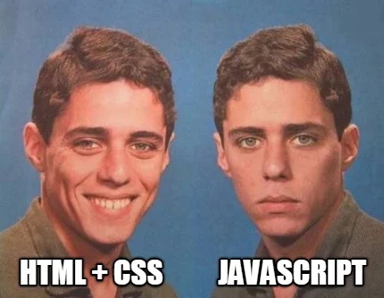

Envie de rencontrer les plus belles startups européennes ? Direction Talent Fair, le 18 novembre de 9h à 18h à EuraTechnologies. Le plus grand événement autour des talents d’Europe du Nord, c’est l’occasion parfaite de trouver l’équipe idéale à rejoindre et d’avoir des infos précieuses sur l’entrepreneuriat. Viens à la rencontre de 60 startups des quatre coins de l’Europe à la recherche de talents du numérique. Et pourquoi pas toi ? Encore mieux : les écoles et les formations les plus recherchées seront aussi présentes ! Allez viens, on te guide dans les méandres de la recherche d’un emploi. Prêt.es ? C’est parti !
Vous souhaitez apprendre un métier tech passionnant ? Vous reconvertir professionnellement ?Se former au code informatique ou à la data est un bon moyen de changer de vie et démarrer une nouvelle carrière dans la tech ! La Wild Code School propose des formations de 5 mois aux métiers tech les plus recherchés sur le marché : développeur web et data analyst. Alors si vous souhaitez en savoir plus, rendez-vous sur le campus de Lille à partir de 8h45 autour d'un petit déjeuner au 4 Av. des Saules bâtiment Le Doge, 59160 Lomme.
Le code vous intéresse ? Vous souhaitez apprendre à coder ? Apprenez à générer vos propres to-do lists avec HTML/CSS/JS :scintillements: À propos de cet évènement HTML, CSS et JS sont des langages de programmation essentiels pour ceux qui souhaitent devenir développeur web. /!\ mercredi 5 octobre 2022, 17:00 – 18:00 /!\

Programme Démonstration live du formateur : Les fondamentaux de Javascript : histoire, principales utilisations, différences entre le Front-end et le Back-end Découvrez les bases de Javascript Création d'un programme interactif de génération de "To-Do List" Ajout de tâches "to do" Suppression des tâches en cliquant dessus Des exercices sont disponibles à la fin du workshop pour continuer à vous former par vous-même.
Le Daily Wilder est heureux de vous présenter les DATAS ANALYSTS. Grand
spécialiste des maths...
Notre formation Data analyst est ouverte à toutes les personnes majeures sans pré-requis de diplôme.
Il est recommandé de disposer de certains pré-requis techniques pour maximiser vos chances de nous
rejoindre : être à l’aise avec les outils informatiques, les tableurs en particulier (feuilles de
calcul comme Microsoft Excel ou Google Sheet), valider des connaissances de base en programmation,
mathématiques et statistiques.
La maturité de votre projet professionnel et la motivation sont aussi deux éléments indispensables
qui seront évalués lors de notre parcours de candidature: Inscription en ligne, Entretien de
Motivation, Entretien Technique.
Le Daily Wilder à l'honneur de vous présenter son fer de lance dans ce monde de brute, le bouclier à tous vos problèmes sauf ceux de réveil ! Le développeur Javascript , enfin... ce qui y ressemble. Notre formation est ouverte à toute personne majeure qui souhaite développer de nouvelles compétences, réaliser une reconversion professionnelle ou monter son propre projet. Nous ne demandons pas de diplôme ni de pré-requis (vous pouvez intégrer la formation Développeur front-end sans bac ou après un DUT ou BTS par exemple). Nous recherchons avant tout un état d'esprit caractérisé par l'envie de réussir, la curiosité, la créativité pour trouver des solutions et la capacité à travailler en équipe. Pour rejoindre notre formation, 3 étapes vous permettent de valider le parcours de candidature :Inscription en ligne, Entretien de Motivation, Entretien Technique.
Notre journal a mené son enquête pour dénicher ses hommes de l'ombre , mi-batman mi-développeur. Nous vous présentons : les développeurs back-end PHP. La formation Développeur web est ouverte à tous les profils, sans condition de diplôme ni pré-requis. Nous recherchons avant tout un état d'esprit caractérisé par l'envie de réussir, la créativité, et la capacité à travailler en équipe. Pour rejoindre notre formation, 3 étapes vous permettent de valider le parcours de candidature: Inscription en ligne, Entretien de Motivation, Entretien Technique.